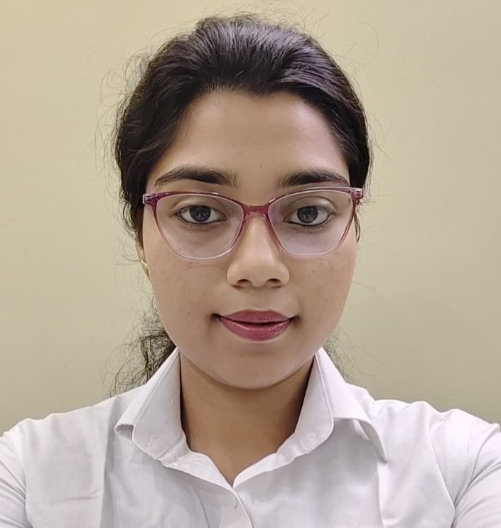

PRESENT
POSTGRADUATE
M.Sc. in Applied Psychology
Currently pursuing postgraduate studies and professional development in applied psychology.
APPLIED PSYCHOLOGY · OBSERVATION · HUMAN BEHAVIOUR
I’m Agniva Banik, an Applied Psychology student interested in human behaviour, psychological assessment, research and thoughtful client-focused work.

A learner with a human-first perspective.
I am pursuing an M.Sc. in Applied Psychology after completing my B.Sc. (Hons.) in Geography. My academic journey has developed my interest in observation, communication, assessment and client-focused practice.
My exposure to autism-care settings has strengthened my patience, empathy, documentation habits and professional communication.
Academic journey
Currently pursuing postgraduate studies and professional development in applied psychology.
Sree Chaitanya College, Habra
8.17 CGPAHabra Kamini Kumar Girls’ High School
89%Habra Kamini Kumar Girls’ High School
63%Practical exposure
Kolkata
Gained exposure to an autism-care and intellectual-disability support environment.
Kolkata
Developed practical understanding of observation, communication and professional interaction in a care setting.
Academic work
Exploring psychology through academic presentations, models and observation.
An academic presentation exploring the basic structure and components of the human mind.
An academic exploration of the PERMA framework and its relationship with positive psychology and wellbeing.
What I bring
Graphology Kolkata
Workshop · Gokhale Memorial Girls’ College
NPTEL Certification Course
LET’S CONNECT
I’m open to opportunities that allow me to learn, contribute and grow within the field of psychology.
Start a conversation ↗